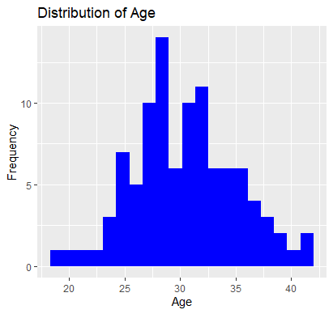
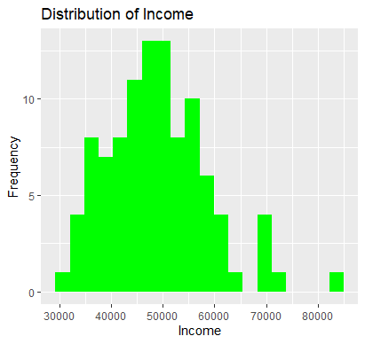
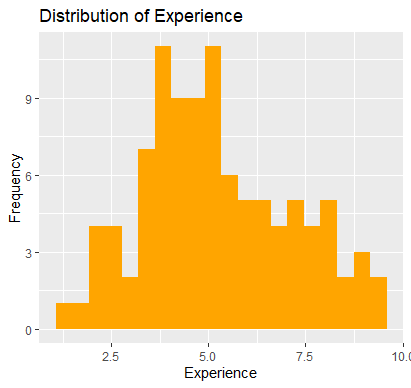
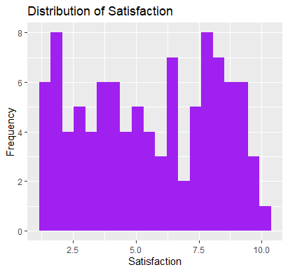
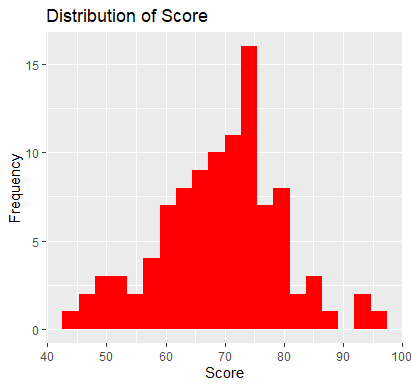

Published on: 12/14/2023
In this blog post, we will perform Exploratory Data Analysis (EDA) on a randomly generated dataset using R.
Let's start by loading and examining the structure of our dataset.
# Load necessary libraries
library(tidyverse)
# Generate a random dataset
set.seed(123)
data <- data.frame(
Age = rnorm(100, mean = 30, sd = 5),
Income = rnorm(100, mean = 50000, sd = 10000),
Experience = rnorm(100, mean = 5, sd = 2),
Satisfaction = runif(100, min = 1, max = 10),
Score = rnorm(100, mean = 70, sd = 10)
)
# Display the first few rows of the dataset
head(data)
Visualize the distribution of the 'Age' variable.
# Exploring Age
ggplot(data, aes(x = Age)) +
geom_histogram(fill = 'blue', bins = 20) +
labs(title = 'Distribution of Age', x = 'Age', y = 'Frequency')

Visualize the distribution of the 'Income' variable.
# Exploring Income
ggplot(data, aes(x = Income)) +
geom_histogram(fill = 'green', bins = 20) +
labs(title = 'Distribution of Income', x = 'Income', y = 'Frequency')

Visualize the distribution of the 'Experience' variable.
# Exploring Experience
ggplot(data, aes(x = Experience)) +
geom_histogram(fill = 'orange', bins = 20) +
labs(title = 'Distribution of Experience', x = 'Experience', y = 'Frequency')

Visualize the distribution of the 'Satisfaction' variable.
# Exploring Satisfaction
ggplot(data, aes(x = Satisfaction)) +
geom_histogram(fill = 'purple', bins = 20) +
labs(title = 'Distribution of Satisfaction', x = 'Satisfaction', y = 'Frequency')

Visualize the distribution of the 'Score' variable.
# Exploring Score
ggplot(data, aes(x = Score)) +
geom_histogram(fill = 'red', bins = 20) +
labs(title = 'Distribution of Score', x = 'Score', y = 'Frequency')

This concludes our Exploratory Data Analysis on the randomly generated dataset. EDA is a crucial step in understanding the characteristics of your data and can guide further analysis and modeling.